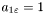
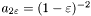

siep_model Namespace Reference
Detailed Description
Package to compute the main lensing functions, critical curves, caustics and constant distortion curves for the SIEP (Singular Isothermal Elliptical Potential) model
See Chap.4 in ...sltools/PerturbativeMethod/writeups/Report_on_Perturbative_Method.pdf
Notice: This model have 3 main parameters.
siep_params[0]: Integer useful to choose the parameterization for the ellipticity
If siep_params[0]=1, It uses the Angle Deflection Model, i.e.,  and
and 
If siep_params[0]=2, It uses the Keeton´s parametrization, i.e.,  and 
siep_params[1]: Ellipticity value (must be ellipticity parameter or the ellipticity by itself whether the angle deflection is used)
siep_params[2]: Mass of the SIS model, related wit the velocity dispersion.